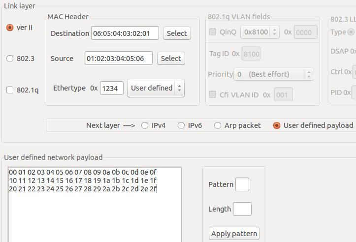
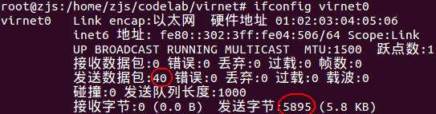

终于搞定了我人生中第一个Linux网络设备驱动！
现在回头看，其实Linux的网络设备驱动真的很简单！Linux内核已经封装掉了TCP/IP相关的所有工作，网络设备驱动唯一需要做的就是把一个帧发送出去，以及接收一个帧交给内核处理。真的很讨厌那些动不动就贴出真实的设备驱动的教程。对于初学者来说，他们需要知道的是一个技术体系的基本结构，而不是一开始就讲细节，否则会淹死在汪洋大海中。这就是为什么我学驱动程序，喜欢从一个最简单的虚拟设备入手，然后慢慢增加复杂度，最终在物理设备上实现。
也不吐槽了，进入正题吧~
=================阶段一：最简网卡驱动==================
先给出一个最简单的网络驱动程序的源码，自己感受一下能够多简单：
virnet.c
#include <linux/module.h>
#include <linux/errno.h>
#include <linux/netdevice.h>
MODULE_LICENSE("GPL");
// 网络设备对象
static struct net_device *sg_dev;
// 有数据帧要发送时，kernel会调用该函数
static int virnet_send_packet(struct sk_buff *skb,struct net_device *dev)
{
// 统计已发送的数据包
dev->stats.tx_packets++;
// 统计已发送的字节
dev->stats.tx_bytes+=skb->len;
// 释放数据帧
dev_kfree_skb(skb);
return 0;
}
// 驱动程序支持的操作
static struct net_device_ops sg_ops=
{
// 发送数据帧
.ndo_start_xmit=virnet_send_packet,
};
// 驱动程序初始化
static int virnet_init(void)
{
// 创建一个网络设备，名为“virnet%d"，kernel会自动填写%d为网卡编号
sg_dev=alloc_netdev(0,"virnet%d",ether_setup);
// kernel 4.4.0-97上需要四个参数如下
//sg_dev=alloc_netdev(0,"virnet%d", NET_NAME_UNKNOWN, ether_setup);
// 该网络设备的操作集
sg_dev->netdev_ops=&sg_ops;
// MAC地址是01:02:03:04:05:06
memcpy(sg_dev->dev_addr,"\x01\x02\x03\x04\x05\x06",6);
// 注册网络设备
register_netdev(sg_dev);
return 0;
}
// 驱动程序销毁
static void virnet_exit(void)
{
// 注销网络设备
unregister_netdev(sg_dev);
// 释放对象
free_netdev(sg_dev);
}
module_init(virnet_init);
module_exit(virnet_exit);
是不是感觉比字符驱动程序还要简单！哈哈哈~
Makefile也是千年不变的：
obj-m := virnet.o KERNEL_DIR := /lib/modules/$(shell uname -r)/build PWD := $(shell pwd) all: make -C $(KERNEL_DIR) SUBDIRS=$(PWD) modules clean: rm *.o *.ko *.mod.c .PHONY:clean
====================阶段二：测试统计功能==================
make后就能产生virnet.ko内核模块。接下来以root权限运行下面命令：
insmod virnet.ko
如果没有报错，那么应该驱动加载成功了。然后看看这个虚拟网卡创建出来了没有：
ifconfig -a

哇！一个名叫virnet0的网络接口赫然出现！而且MAC地址是01:02:03:04:05:06，这个和代码里的设置一模一样！
那怎么测试该网络接口呢？可以使用一个小工具，叫做packeth，这是一个用来构造并发送任意以太数据包（帧）的图形化工具。另一个工具就是大名鼎鼎的wireshark。于是呢，我们可以用packeth来发送数据包，而用wiershark来监视网络接口的收发情况。当然，ifconfig这一类工具也是很有用的~
以root权限启用virnet0：
ifconfig virnet0 up
以root权限运行packeth，点击Interface按钮

在弹出的对话框中，输入使用virnet0网络接口：

之所以virnet0没有出现在下拉列表中，是因为virnet0还没分配IP地址。不过这没有关系。
现在我们可以构造数据包了。首先，Link layer中，我们填写Destination为06:05:04:03:02:01，其实随便填啦，是个MAC地址就好。Source为01:02:03:04:05:06，也就是virnet0自身的MAC地址，不过其实也可以随便填。Ethertype选择User defined，填0x1234。接下来的User defined network payload就填
00 01 02 03 04 05 06 07 08 09 0a 0b 0c 0d 0e 0f 10 11 12 13 14 15 16 17 18 19 1a 1b 1c 1d 1e 1f 20 21 22 23 24 25 26 27 28 29 2a 2b 2c 2d 2e 2f
最终如下：

就差点击Send啦！别急，为了看看我们代码中的发送统计功能是否奏效，先查看一下当前的统计数据。
ifconfig virnet0

当前发送了39个帧，共5833字节。那好，我发送一个我们自己构造的以太帧~点击一下Send按钮，可以看到packeth最下面的状态栏显示一行话：
所以按理说，现在应该发送了40个帧，共5833+62=5895字节。
ifconfig virnet0

哈哈，完全正确！
=================阶段三：验证网卡得到了数据==============
从上面的测试中可以得知，virnet驱动程序能够获得正确的帧长度，并且对外行为和一个真实的网卡一致。在真实的驱动程序中，只需要按照特定的硬件手册，把帧通过硬件发送出去就好了~那么我们如何得到要发送的数据呢？
其实很简单，数据就在skb->data指针指向的缓冲区里。
稍稍修改virnet_send_packet，我们把要发送的数据帧中每一个字节打印出来！
// 有数据帧要发送时，kernel会调用该函数
static int virnet_send_packet(struct sk_buff *skb,struct net_device *dev)
{
int i;
// 告诉内核不要传入更多的帧
netif_stop_queue(dev);
// 打印出数据帧
printk("send, length=%d:\n",skb->len);
for(i=0;i<skb->len;i++)
printk("%x ",skb->data[i]);
printk("\n");
// 统计已发送的数据包
dev->stats.tx_packets++;
// 统计已发送的字节
dev->stats.tx_bytes+=skb->len;
// 释放数据帧
dev_kfree_skb(skb);
// 告诉内核可以传入更多帧了
netif_wake_queue(dev);
return 0;
}
rmmod virnet make insmod virnet.ko ifconfig virnet0 up
然后重复上文中的测试方法，可以用dmesg看到virnet的输出：
dmesg | tail -n 10

如果熟悉以太网帧的结构的话，一眼就可以看出数据是对的。以太网帧的开头6字节是Destination MAC，接下来6字节是Source MAC，再接下来的2字节是Type/Length，最后的就是以太网帧的负荷（payload）。所以
Destination MAC = 6:5:4:3:2:1 Source MAC = 1:2:3:4:5:6 Type/Length = 0x1234 Payload = 00 01 02 ... 0f 10 11 12 ... 1f 20 21 22 ... 2f
完全正确~